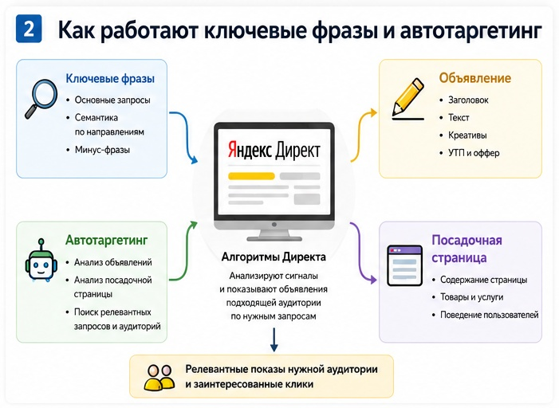
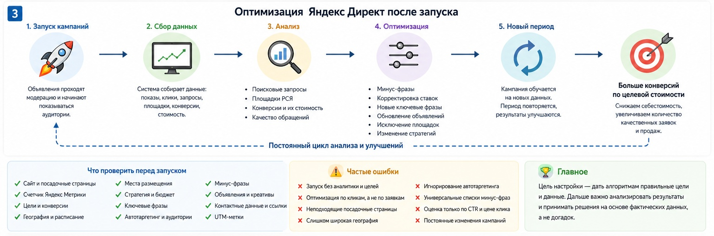

Блог о платном трафике
Настройка Яндекс Директ: что входит и как правильно запустить рекламу
Настройка Яндекс Директ - это не создание нескольких объявлений и подбор ключевых слов. Для нормального запуска нужно подготовить сайт и аналитику, определить цели рекламы, выбрать структуру кампаний, настроить аудитории и ограничения, подготовить объявления, задать стратегию и после запуска проверить реальный трафик.
В 2026 году значительная часть управления рекламой автоматизирована. Алгоритмы сами участвуют в аукционе, подбирают аудиторию и могут оптимизировать показы под конверсии. Поэтому качество настройки сейчас во многом зависит от того, какие данные и ограничения получает система.
Если вам нужна именно пошаговая инструкция по самостоятельному запуску, у меня есть отдельный материал: как настроить рекламу в Яндекс Директ. Здесь разберу сам процесс настройки как рекламной системы: что должно быть сделано до запуска, в кабинете и после появления первых данных.
Что входит в настройку Яндекс Директ
Состав работ зависит от бизнеса, но нормальная настройка обычно включает несколько этапов.
| Этап | Что делается |
|---|---|
| Подготовка | Анализ продукта, спроса, конкурентов, сайта и рекламного предложения |
| Аналитика | Яндекс Метрика, цели, звонки, заявки, покупки и другие конверсии |
| Структура | Выбор типов кампаний, мест показа, групп и сегментов |
| Таргетинг | Ключевые фразы, автотаргетинг, аудитории, география, минус-фразы |
| Объявления | Заголовки, тексты, изображения, видео, ссылки |
| Стратегия | Выбор модели управления ставками, целей и ограничений бюджета |
| Запуск | Проверка настроек, модерация и начало показов |
| Оптимизация | Анализ запросов, площадок, конверсий, стоимости и качества заявок |
Сам запуск занимает небольшую часть работы. Ошибки чаще появляются раньше: неверно выбрана цель, сайт плохо соответствует запросу пользователя, бюджет не подходит выбранной стратегии или системе дали слишком широкую аудиторию.

Настройка начинается до рекламного кабинета
Я сначала смотрю, что именно рекламируется и куда будет приходить человек после клика.
Если пользователь ищет конкретную услугу, а объявление отправляет его на общую главную страницу с десятью направлениями, даже технически хорошо настроенная кампания может работать плохо.
До запуска я проверяю:
- соответствует ли посадочная страница рекламируемому продукту;
- понятно ли предложение на первом экране;
- есть ли заметный способ оставить заявку;
- корректно ли работает сайт на мобильных устройствах;
- можно ли измерить нужное действие пользователя;
- какие товары или услуги имеет смысл рекламировать отдельно;
- какие регионы действительно обслуживает бизнес.
Рекламный кабинет не исправляет слабый оффер или неудобную посадочную страницу. Он только приводит на нее людей.
Аналитика и цели в Яндекс Метрике
Одна из основных частей настройки - определить, какой результат должен получать алгоритм.
Для сайта такими целями могут быть:
- отправка формы;
- звонок;
- оформление заказа;
- покупка;
- регистрация;
- запись;
- другое значимое действие.
Для стратегии «Максимум конверсий» требуется счетчик Яндекс Метрики. Яндекс указывает, что стратегия автоматически управляет ставками, стараясь получить больше выбранных целевых действий в рамках установленных ограничений.
Я не рекомендую выбирать основной целью простое посещение страницы, если у бизнеса регулярно происходят реальные заявки или покупки. Иначе система может хорошо оптимизироваться под посетителей, которые открывают сайт, но совершенно не обязательно становятся клиентами.
Если заявка может прийти разными способами, желательно учитывать каждый из них. Например, форма на сайте и телефонный звонок должны попадать в аналитику отдельно.
Как выбрать структуру рекламных кампаний
В режиме эксперта одним из основных инструментов Яндекс Директа сейчас является Единая перфоманс-кампания, или ЕПК. В ней можно управлять рекламой на Поиске, в РСЯ и Картах, создавать несколько групп объявлений и использовать разные условия подбора аудитории.
Но это не означает, что все направления бизнеса нужно обязательно объединять.
Я разделяю кампании или группы тогда, когда для этого есть практическая причина. Например:
- разные товары имеют разную экономику;
- направления требуют разных посадочных страниц;
- регионы сильно отличаются по спросу;
- нужно отдельно контролировать Поиск и РСЯ;
- для разных услуг установлена разная допустимая цена заявки;
- одна аудитория работает значительно лучше другой.
Создавать десятки кампаний только ради красивой структуры тоже нет смысла. Слишком сильное дробление распределяет статистику между большим количеством элементов и может мешать обучению автоматических стратегий.
Поиск и РСЯ
Поиск Яндекса работает в первую очередь со сформированным спросом. Пользователь уже вводит запрос, связанный с товаром или услугой.
РСЯ работает по другой логике. Объявления показываются на сайтах, в приложениях и сервисах рекламной сети, а система использует сигналы об аудитории, интересах и содержании площадки.
Подробнее про этот источник трафика я написал в статье что такое РСЯ в Яндекс Директ.
Не нужно заранее считать один из источников гарантированно лучшим. В одних проектах основную часть качественных обращений дает Поиск, в других хорошо работает РСЯ. Решение лучше принимать по реальной статистике.
Ключевые фразы сегодня работают вместе с автотаргетингом
Классическая настройка Директа много лет строилась вокруг огромного семантического ядра: специалист собирал тысячи ключевых фраз, дробил их на группы и пытался максимально точно управлять каждым запросом.
Сейчас такой подход нужен далеко не всегда.
Ключевые фразы остаются полезным сигналом для системы, но параллельно работает автотаргетинг. Он анализирует объявление и страницу перехода и самостоятельно определяет подходящие поисковые запросы или аудиторию.
На Поиске в ЕПК автотаргетинг является обязательным условием показа. В каждой группе должна быть выбрана минимум одна его категория.
Поэтому современная настройка семантики для меня выглядит так:
- Определить основные направления спроса.
- Собрать действительно полезные ключевые фразы.
- Отделить разные намерения пользователей.
- Убрать очевидно нецелевой спрос.
- Настроить категории автотаргетинга.
- После запуска анализировать реальные поисковые запросы.
Именно последний пункт часто оказывается важнее попытки заранее предусмотреть каждую возможную формулировку.

Минус-фразы
До старта нужно исключить запросы, которые явно не относятся к предложению. Например, поиск работы, обучение, другой продукт или регион, который компания не обслуживает.
Но я не рекомендую загружать в новую кампанию огромный универсальный список минус-фраз из интернета.
Одно и то же слово может быть нецелевым для одного бизнеса и коммерческим для другого. Слишком агрессивная минусация способна удалить вместе с мусорным трафиком потенциальных клиентов.
Основная работа продолжается после запуска, когда появляются фактические поисковые запросы. Подробнее эту тему я разобрал отдельно: минус-фразы для Яндекс Директа.
Настройка объявлений
Объявление должно соответствовать тому, что человек ищет и что он увидит после перехода на сайт.
Я обычно проверяю связку из трех элементов:
Запрос или аудитория -> объявление -> посадочная страница.
Если человек ищет конкретный товар, заголовок должен быстро показать, что нужный товар есть. После клика пользователь должен попасть на соответствующую страницу, а не искать его заново по сайту.
Для кампаний стоит подготовить несколько содержательно разных рекламных материалов:
- заголовки;
- тексты;
- преимущества;
- изображения;
- видео, если оно уместно;
- призывы к действию.
Пять почти одинаковых заголовков с переставленными словами дают системе меньше полезной информации, чем несколько действительно разных вариантов предложения.
Какую стратегию выбрать
В ЕПК сейчас доступны «Максимум кликов», «Максимум кликов с ручными ставками» для поисковых кампаний, «Максимум конверсий» и «Максимум прибыли».
Для большинства проектов я в первую очередь рассматриваю автоматические стратегии.
Если у рекламы достаточно конверсий, логичнее оптимизировать кампанию именно под заявки, заказы или покупки. Яндекс рекомендует рассчитывать недельный бюджет конверсионной стратегии так, чтобы его хватало примерно на 10-20 конверсий в неделю.
Если проект новый и такого количества событий пока нет, иногда разумнее сначала получить трафик и накопить данные.
Ручные ставки остаются полезными в отдельных сценариях, например в очень дорогом конкурентном поиске, где нужен максимальный контроль участия в аукционе. Подробно выбор разобран в статье какую стратегию выбрать в Яндекс Директ.
Как определить бюджет
Универсального рекламного бюджета для Яндекс Директа не существует.
На необходимую сумму влияют:
- спрос;
- конкуренция;
- регион;
- стоимость трафика;
- конверсия сайта;
- стоимость целевого действия;
- количество заявок, которое нужно бизнесу;
- выбранная стратегия.
Поэтому я не начинаю расчет со случайной суммы вроде «попробуем потратить немного и посмотрим».
Логичнее идти от экономики. Если известна допустимая стоимость обращения и необходимое количество обращений, появляется ориентир для тестового бюджета.
Для предварительной оценки поискового спроса можно использовать прогноз Директа, но он остается прогнозом. Реальная стоимость заявок становится понятна только после запуска и накопления статистики.
Что нужно проверить перед запуском
Перед отправкой кампаний на модерацию я проверяю всю цепочку еще раз:
- правильный сайт и страницы перехода;
- счетчик Метрики;
- основные цели;
- географию показов;
- расписание;
- места размещения;
- стратегию;
- недельный бюджет;
- ключевые фразы;
- категории автотаргетинга;
- минус-фразы;
- тексты и креативы;
- контактные данные;
- корректность ссылок;
- передачу UTM-меток, если они используются.
Такая проверка занимает гораздо меньше времени, чем исправление ошибки после того, как кампания уже начала расходовать деньги.
Настройка не заканчивается после запуска
После запуска начинается самый полезный этап - появляются реальные данные.
Я смотрю не на то, насколько красиво выглядит структура рекламного кабинета, а на то, кого реклама действительно приводит.
В первую очередь проверяю следующие показатели.
Поисковые запросы
В отчете можно увидеть реальные запросы, по которым пользователям показывались объявления. Яндекс позволяет анализировать условие показа, категорию таргетинга и тип соответствия запроса.
Нецелевые направления постепенно исключаются, а хорошие запросы можно использовать для дальнейшего развития рекламы.
Площадки РСЯ
Часть площадок может давать хороший результат, часть - расход без полезных действий. Их нужно оценивать по статистике, а не блокировать заранее по универсальному списку.
Конверсии
Основной вопрос - сколько реклама принесла нужных действий и сколько они стоили.
Клики, CTR и показы нужны для диагностики. Для бизнеса важнее заявки, продажи и их качество.
Качество обращений
Две кампании могут показывать одинаковую стоимость заявки, но одна приводить реальных покупателей, а другая - случайные обращения.
По возможности данные рекламного кабинета стоит связывать с CRM, телефонией или информацией от отдела продаж.

Не нужно постоянно вмешиваться в работу алгоритма
После запуска часто возникает желание каждый день менять ставки, стратегию, бюджет, аудитории и объявления.
Для автоматических стратегий это может мешать накоплению статистики. Например, для «Максимума конверсий» Яндекс рекомендует оценивать первые результаты после периода сбора данных, который может занимать 7-14 дней. Изменение цели или атрибуции запускает обучение заново.
Это не значит, что рекламу две недели нельзя открывать. Нужно контролировать расход, запросы, очевидные ошибки и качество трафика, но серьезные изменения лучше делать на основании данных.
Основные ошибки при настройке Яндекс Директ
По моему опыту, самые дорогие ошибки обычно выглядят довольно просто:
- реклама запускается без нормальной аналитики;
- оптимизация идет по слишком простой или неправильной цели;
- посадочная страница не соответствует объявлению;
- география настроена шире реальной зоны работы;
- автотаргетинг оставлен без контроля;
- минус-фразы собраны один раз и больше не обновляются;
- все внимание уделяется цене клика;
- Поиск и РСЯ оцениваются одинаково;
- слишком маленький бюджет пытаются использовать с конверсионной стратегией;
- кампания постоянно меняется и не успевает накопить статистику.
Отдельная проблема - оценка работы по количеству созданных ключевых слов или объявлений. Кампания с 5000 фраз не становится автоматически лучше кампании со 100 фразами.
Как понять, что Яндекс Директ настроен правильно
Я бы оценивал качество настройки не по количеству элементов в кабинете, а по нескольким признакам.
У рекламы есть понятная бизнес-цель. Конверсии корректно измеряются. Структура кампаний соответствует направлениям бизнеса. Объявления ведут на подходящие страницы. В трафике нет большого объема очевидно нерелевантных запросов. Расход соответствует плану. После запуска ведется анализ статистики.
И главное - можно проследить цепочку от рекламного расхода до заявки или продажи.
Если специалист показывает только CTR, количество кликов и среднюю цену перехода, этого недостаточно для оценки результата.
Самостоятельная настройка или работа со специалистом
Самостоятельно запустить рекламу технически можно. В интерфейсе Яндекс Директа есть Простой старт, Мастер кампаний и более гибкий режим эксперта. Для начинающих Яндекс отдельно предлагает автоматизированный Простой старт, где система самостоятельно формирует значительную часть настроек.
Сложность начинается после появления первых расходов.
Нужно понять:
- почему заявок мало;
- почему они дорогие;
- откуда пришел нецелевой трафик;
- какую цель выбрать для алгоритма;
- стоит ли менять стратегию;
- какие запросы исключить;
- какую аудиторию расширить;
- где проблема находится не в рекламе, а на сайте.
Поэтому самостоятельный запуск подходит тем, кто готов разбираться в аналитике и регулярно работать с кампанией, а не только один раз заполнить настройки.
Сколько стоит настройка Яндекс Директ
Цена зависит от объема задачи. Настройка одного направления услуг и запуск большого интернет-магазина с каталогом, фидом, несколькими регионами и аналитикой - это разный объем работы.
На стоимость обычно влияют:
- количество направлений;
- структура сайта;
- объем семантики;
- число кампаний;
- необходимость настройки Метрики;
- интеграции с CRM и телефонией;
- создание рекламных материалов;
- сложность аналитики.
Поэтому сравнивать предложения подрядчиков только по цене настройки некорректно. Сначала нужно сравнить, что именно входит в работу.
Настройка и ведение - разные этапы одной работы
Разовая техническая настройка создает основу рекламной кампании. Но заранее определить все эффективные запросы, аудитории, площадки и объявления невозможно.
После запуска появляются данные, которых до этого просто не существовало.
По ним можно:
- отключать неэффективные направления;
- расширять рабочие сегменты;
- корректировать объявления;
- менять посадочные страницы;
- дорабатывать стратегию;
- перераспределять бюджет;
- масштабировать связки, которые дают результат.
Поэтому я рассматриваю настройку как первый этап работы с рекламой, а не как законченный продукт.
Главное
Хорошая настройка Яндекс Директ начинается не с ключевых слов и не с кнопки «Создать кампанию».
Сначала нужно определить цель рекламы и подготовить аналитику. Затем выбрать подходящую структуру, настроить аудиторию, объявления, автотаргетинг, ограничения и стратегию. После запуска - проверить реальные поисковые запросы, площадки, стоимость конверсий и качество обращений.
Современный Директ сильно зависит от алгоритмов. Задача специалиста сегодня - дать этим алгоритмам правильные цели и данные, ограничить явно нецелевой трафик и принимать дальнейшие решения по фактическим результатам.